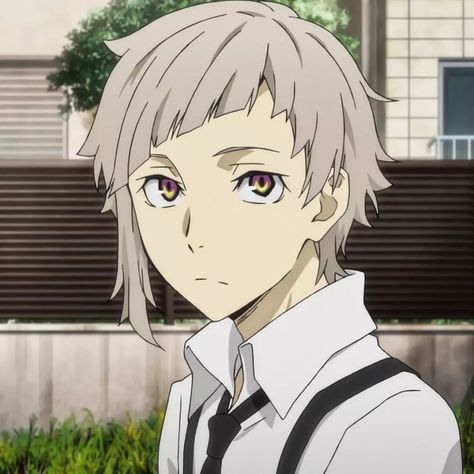
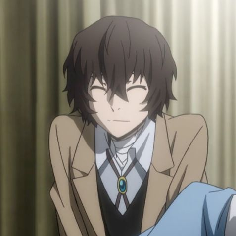
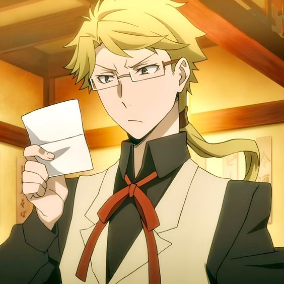
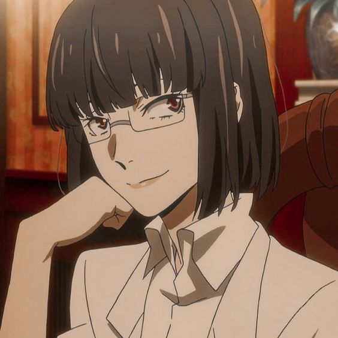
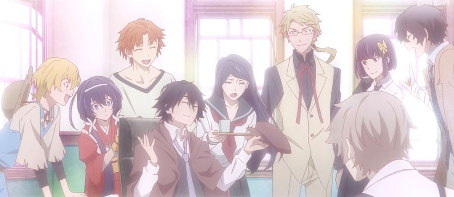

Introduction
An orphan named Nakajima Atsushi gets kicked out of the orphanage he once lived. With no money or place to stay, Atsushi reluctantly decides that the only option for him to survive is to steal. He finds a man--whose name he later learned was Osamu Dazai--floating upside-down along a nearby river. With a moment's hesitation and a moral dilemma, Atsushi decided that maybe he could steal from the drowning man, and made a dive for it. This action instead resulted in Atsushi saving Dazai from what he found out was a suicide attempt. Dazai explains that he and his partner Doppo Kunikida are members of a very special detective agency. They have supernatural powers and deal with cases that are too dangerous for the police or the military. They're tracking down a tiger that has appeared in the area recently, around the time Atsushi came to the area. The tiger seems to have a connection to Atsushi, and by the time the case is solved, it's clear that Atsushi's future will involve much more of Dazai and the rest of the detectives!
Characters
Bungo Stray Dogs has lots and lots of characters, each unique in their own way, to accompany its very complicated and non-stop twisting plot. Because of this, I will narrow down this list to just a few of my favorite characters.
Nakajima Atsushi
Nakajima Atsushi is this series's main protagonist. He features an awkward yet caring personality, and will do all in his power to save others from getting hurt, despite how idiotic his tactics may be. Atsushi's traumatic past affects much of his daily life--constantly tormented by nightmares, flashbacks, and the internal monologue of the orphanage director who abused him. He has a severely low sense of self-worth and is somewhat naïve, which causes him to feel helpless when caught in dangerous situations. He gets paralyzed from guilt and/or fear, which causes him to have a difficulty reacting or understanding what to do. He also tends to react strongly and believe things at face value, trusting others' judgment above his own and even abandoning his instincts. He has what is called a "special ability" that only few individuals possess. His is called "Beast Under the Moonlight" which lets him transform into a big white tiger, heighten his senses and battle skills, and regrow lost limbs with incredible speed.

Osamu Dazai
The man who took Atsushi into the Armed Detective Agency and became his mentor. Half of the Bungo Stray Dogs fandom is in love with him while the other half hates him with a burning passion. He's sort of a jerk but also kinda cute? Pick a side, I guess.
Anyway, Dazai may not look it but he is a man of extremely sharp wit. He handles every situation with utter confidence--be it in battle or bad situations he himself planned out in the first place. Dazai often acts very dramatic, taking most of his actions and whatever bad thing that's happening to him as a joke. Even if said actions are his uncountable attempts to commit suicide. He is a mysterious character despite having the most flashbacks and spinoff series, which mostly just raise more questions than answers. He wears the figurative mask of a clown, playing and laughing things off no matter how bad they may be. When interrogated by people who consider themselves to be his friend about why he wants to die so bad, he usually just cracks a joke or tease the person to change the subject. He's a very interesting character in my opinion and I could write a whole essay in an attempt to psychoanalyze him. His special ability is called "No Longer Human" which lets him nullify others' special abilities with nothing but a simple touch.

Doppo Kunikida
Doppo Kunikida is a man who is very passionate towards his job in the Armed Detective Agency. It seems the reputation of the agency takes precedence over anything else in his life. He is always very professional and diligent, whether it be in his work or even personal life. He constantly feels the need to organize and schedule everything, which is why he may come off as very strict and harsh during missions. Adding to this, he is also very hot-headed and short-tempered.
Kunikida is a very trustworthy and loyal detective whom many in the Agency rely on because of his authoritative capability and responsible nature, which is why he's deemed as the Agency's next-in-line to becoming its President once the current one, who is named Fukuzawa Yukuchi, retires or dies.
Kunikida has a special ability called "The Matchless Poet" which allows him to make objects written in his notebook into existence. However, it cannot make any objects larger than the notebook.

Akiko Yosano
Akiko Yosano is the Agency's healer. She is a woman who carries herself with confidence and dignity. She prides herself on being both a strong woman and a capable doctor, and does not take kindly to those who belittle or underestimate her in either aspect. She is often kind and composed carrying a good sense of humour, but beware once she is angered, for she can and will beat you to a pulp. She has a sadistic side of which I assume was from her days spent at the Port Mafia (the Armed Detective Agency's enemy organization), where she was taught by Mori Ougai, a doctor who then kills the former boss of the Port Mafia to take his place. Her ability is called "Thou Shalt Not Die" which lets her heal all external wounds as long as they are fatal. Because of this, her ability is inconvenient for healing minimal wounds since she needs to fatally injure that person beforehand.

All information listed here is retrieved from:
Bungo Stray Dogs Wiki. Fandom. (n.d.). Retrieved from: https://bungostraydogs.fandom.com/wiki/Bungo_Stray_Dogs_Wiki
and my own screenshots, knowledge, and theories with the series!

That's all! Thanks for listening!